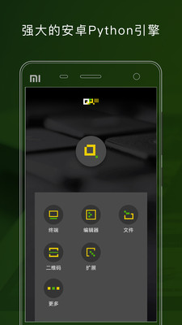

手机上跑 Python 到底能有多顺手？QPython 三年老用户的对比结论
从 Termux、Pydroid 一路试过来，QPython 在移动端 Python 这个小众赛道里的位置到底在哪里，哪些人值得装、哪些人其实没必要。
在手机上写 Python 这件事，说它小众一点都不夸张——但每年还是有不少人忍不住要折腾。原因很简单：碎片时间想写两行、临时需要在现场跑个脚本调试、或者带不动笔记本的时候手里这台 Android 总得做点有用的事。
这条赛道里真正值得拿来对比的选手其实没几个。终端党会选 Termux，装完就能用 apt 装系统级 Python，生态最完整但纯命令行对新手不够友好；Pydroid 一度是图形化编辑器的主流，预装库多、上手快但免费版限制不少。QPython官网 是另一个路线——从一开始就瞄准「不想折腾环境、打开就能在手机上跑 Python」这群人，附带一套 Android API 桥接能力，让你用 Python 调传感器、发短信、读 NFC 标签这些原本需要写 Java 才能做的事。
我三个都用过，各自装过又卸过，QPython 留在手机上的时间最长。不是说它全能，而是它刚好卡在一个不上不下的位置：对新手来说太折腾的功能它砍掉了，对重度程序员来说又不够用的地方它承认自己不行。这种自知之明反而让它成了移动端 Python 里最能「凑合着用」的那一个。
它把移动端 Python 这件事做对了两件事
第一，环境自动初始化——打开就能写
我装 Termux 的时候，第一次启动花了二十多分钟 apt update + upgrade，然后才是 pip install numpy matplotlib 一套。Pydroid 好一点但也得自己在终端里配置几个环境变量。QPython 从官方下载拿到安装包点开，Python 解释器是内置的，启动时自动校验一遍就好，不需要联网下运行时。权限申请是批量弹窗，照着勾完进入主界面，底部三个大按钮——终端、编辑器、扩展，一眼知道去哪。

Android 13+ 之后权限模型收紧了，存储、位置、相机、蓝牙、NFC 挨个要确认，不少人第一次用的时候嫌烦直接全拒。这里有个容易踩的坑：权限拒了不会崩溃，但相关功能会静默失败。比如想调摄像头拍个照，代码跑完没反应，大概率是相机权限没开。ROM 层面还有一层坑——小米的 MIUI、OPPO 的 ColorOS、三星的 OneUI 会弹「建议禁止后台运行」的提示，千万别选禁止，选允许或加白名单，否则长时间跑的脚本会被系统直接杀进程。
第二，编辑器对手机键盘是真的做了优化
在手机上敲 Python 代码的最大痛点从来不是功能，是输入法。中英文来回切、标点符号要跳三下键盘、代码补全能不能点着选而不是继续敲字母——这三件事做好了，编辑器才算在手机上可用。
QEditor 底部有个扩展键盘条，把括号、引号、冒号、分号这些高频符号直接做成按钮，不用切到英文键盘再找半天。代码补全也不贪多——它知道自己在手机上，静态分析做不了桌面 IDE 那么深，但关键字、内置函数、已导入模块的成员补全都正常。输入 np. 能弹 numpy 的方法列表，不用死记硬背。补全弹窗出来后直接点选就行，不需要敲字符确认，对单手操作的场景特别友好。

当然也得承认，桌面 IDE 那套跨文件跳转、类型推断、项目级补全，手机上都别想。复杂项目建议还是在 PC 上写完，手机端用 QPython 跑通验证或者做轻量调试。
它为这些优势付出了什么
QPython 走的是「开箱即用」路线，但这个路线天然有代价。
最明显的是第三方包的兼容性。它有个图形化的 QPYPI 界面，推荐列表里的包是官方测过能在 Android 上装的，但你自己搜来的包能不能装全看运气。有 C 扩展的包基本装不上——Android 上没有编译工具链，pip 会直接报 gcc not found。遇到这种情况要么找纯 Python 替代，要么放弃。版本冲突也是常态，手机算力有限，装太多包本身就是在给自己找麻烦。
然后是生态覆盖度。Termux 能装的包它装不了，Pydroid 能装的它也不一定能。QSL4A 那套 Android API 桥接听起来很酷，实际常用的就是传感器、通知、剪贴板、摄像头这几个，太偏门的 API 得自己翻 QPython文档 找用法，社区资料不算多。官方课程体系是完整的，但更新频率不高，4.0 版本引入的 AI 能力在课程里还没覆盖全。
还有个容易忽略的问题——存储路径。QPython 的脚本默认存在 App 内部存储里，换手机或清缓存容易丢，建议定期手动把脚本目录备份到云盘。
什么样的人选它
如果你完全零基础、想在手机上第一次体验 Python 能做什么，选 QPython。它的官方课程从零基础开始，七个章节走完就能独立写脚本，不需要先懂 Linux 命令行，也不需要搞懂 Android 的权限模型——照着点就行。
如果你已经会写 Python、想在手机上做点轻量的东西，QPython 也值得装。传感器数据采集、现场自动化脚本、配合 NFC 做个小工具——这些用 QSL4A 写出来比在 PC 上搭环境省事得多。扩展键盘条和补全能把手机上的写代码体验拉到一个实际可用的水平。
但如果你是重度 Python 开发者、需要科学计算或 Web 框架的完整生态，直接用 Termux。纯命令行虽然上手门槛高，但 apt + pip 能装几乎所有包，没有 C 扩展编译的限制。Pydroid 适合介于两者之间的人——想要图形化界面但不玩 Android API，不过免费版的限制需要自己权衡。
我的建议很直接：想快速上手移动端 Python 就装 QPython，别纠结 Termux 的命令行学习曲线；已经在 PC 上跑通 Python 项目、需要在手机上做轻量验证，QPython 也够用。但别指望用它做正事——手机上跑 Python 永远是应急和玩票性质的，真正的项目还是得回到桌面。
这套环境的安装包和完整使用资料可以在 QPython 官网找到，拿到后按首次启动的引导走完权限配置就能直接用了。进阶的 QSL4A API 调用、PIP 包管理的详细方法，都可以在它的中文文档里查到。这些资料同时也在 GitHub、Gitee、GitCode 上同步维护着，哪个访问方便就用哪个。